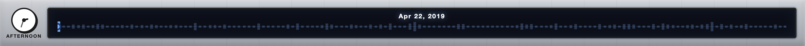

•Core Objective: Two players race from the Start Zone (Green) to the Finish Zone (Red). The winner is the player with the lowest cumulative noise penalty in dB.
•Game Setup & Environment: The field is a 7 x 5 coordinate grid with 35 cells. All players must begin on the Green START cell, and each player begins at 0.0 dB.
•Movement & Mechanics: Play is turn-based, and the board stays blind until a player lands on a cell. The revealed sensor dB is added to that player’s cumulative score, and players must complete at least 10 moves before they can enter the Finish Zone.
•Conclusion of Play: The match stays active until both players reach the Red FINISH cell. Once both have finished, the player with the lowest total dB accumulation is declared the winner.
•On the User Interface:Noise Penalty (dB) tracks cumulative noise, Current Sensor shows the noise type for the active cell, Past Sound Moves logs visited cells, and the Status Bar shows active noise interference types impacting the map.
---
INIT
PROJECT INFO▌
DISPLAY MODES
This project features two distinct modes tailored for different user experiences:
•VIEW MODE (Accessibility Focus): Designed for data exploration. Users can click anywhere on the map grid to analyze acoustic data. The left column shows the identified location and detected sounds, while the right column provides an AI-generated summary of the area's acoustic environment.
•GAME MODE: An interactive experience where users navigate the grid using pawns. It tracks accumulated noise penalty (dB), reveals the current sensor at your position, keeps a Past Sound Moves log, and uses the Status Bar to surface active noise interference on the map.
TEMPORAL NAVIGATION
Navigate the dataset's history using the interactive timeline and clock. To ensure a comprehensive overview, data is now aggregated into monthly blocks.

•Monthly Timeline Slider: Groups acoustic data by month. The bar graph highlights the times where city sounds recorded the highest peak dB levels within that 30-day period.
•Time Clock: Cycle through specific times (Morning, Noon, etc.) within your selected period. If TIME SPECIFICITY is unchecked in the Menu, the clock is hidden and all data for the requested day/week/month is combined.
SOUND LEGENDS & INDICATORS
Each sound type is represented by a unique color-coded MTA bullet. When a sound is detected at a location, it is marked with a pulsing indicator in the corresponding color that can be referred back to the legends.
● Alert Signal
● Dog
● Engine
● Human Voice
● Machinery Impact
● Music
● Non-Machinery Impact
● Powered Saw
The Sound Legend bar at the bottom allows you to toggle specifically which sounds you want to focus on. Toggling a legend item will update the timeline view to highlight periods where that specific sound is prominent.
DATASET CITATION
Cartwright, M., Cramer, J., Mendez, A.E.M., Wang, Y., Wu, H., Lostanlen, V., Fuentes, M., Dove, G., Mydlarz, C., Salamon, J., Nov, O., Bello, J.P. SONYC-UST-V2: An Urban Sound Tagging Dataset with Spatiotemporal Context. In Proceedings of the Workshop on Detection and Classification of Acoustic Scenes and Events (DCASE), 2020.